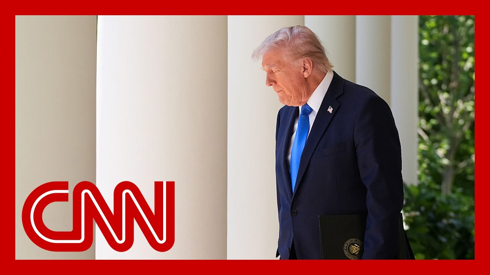

来B站一起耍【Global每日英语简报】
【共和党在中期选举中加大特朗普弹劾议题的讨论力度】
Summary: Republicans are discussing ways to energize Trump's base by highlighting the possibility of impeaching him for a third time, despite Democratic reluctance and mixed public opinion on impeachment.
摘要： 共和党正讨论通过强调第三次弹劾特朗普的可能性来激励其基本盘，尽管民主党对此持保留态度且公众对弹劾看法不一。

⏱️ Estimated Reading Time: 17 min
No concerns in the right place to the.
问题并未出现在正确的地方。
Well, we've already seen this on They've already tried it twice.
好吧，我们已经见识过这一点，他们已经尝试过两次了。
I'm certain they would try it ag President Trump won't be on the ticket in the 2026 midterms.
我确信他们会再次尝试，尽管特朗普不会出现在2026年中期选举的选票上。
So GOP leaders are discussing wa to turn out the MAGA faithful.
因此，共和党领导人正在讨论如何动员MAGA忠实支持者。
One way to do that.
其中一种方法。
Talk up the prospects that Trump could be impeached for a record third time.
就是大肆宣扬特朗普可能创纪录地第三次遭到弹劾的前景。
If Democrats take back the House even though Democratic leaders a wary of doing so.
即使民主党领导人对此持谨慎态度，但如果民主党夺回众议院控制权。
New reporting this morning with my colleague Sarah Ferris details how Trump and GOP leaders are plotting their midterm strat trying to woo key candidates, including Governor Brian Kemp for a Georgia Senate run.
今早我与同事Sarah Ferris的最新报道详细披露了特朗普和共和党领导人如何谋划中期选举策略，试图拉拢关键候选人，包括佐治亚州州长Brian Kemp参选参议员。
But not all Republicans think the strategy of talking up a potential Trump impeachment is enough to win.
但并非所有共和党人都认为炒作潜在的特朗普弹劾足以赢得选举。
If the Republican campaign message in the midterms for House Republicans and vote for Republican candidates for Se to stop the Democrats from impeaching Trump, the American people are not going to care, because I've seen that show twic and it didn't matter.
如果共和党在中期选举中的竞选信息是让选民投票给共和党众议员和参议员候选人以阻止民主党弹劾特朗普，美国民众不会在意，因为我已经看过这场戏两次，结果毫无意义。
It won't work.
这不会奏效。
No. I excellent.
不，我很好。
Panel's back.
专家小组回来了。
I mean, look, midterm elections, as we know, are typically very painful for our party in power.
我的意思是，众所周知，中期选举通常对执政党非常不利。
We have problems with the econom concerns about Trump overreach.
我们面临经济问题和对特朗普越权的担忧。
Democrats are very confident that things will change next Nov
民主党人非常确信明年11月形势会发生变化。
However, this is a small map.
然而，这是一张小地图。
This is a battleground where very few districts are truly at play.
这是一个只有极少数选区真正具有竞争性的战场。
There are only three Republicans in districts in which Kamala Harris won, which is perhaps why they want to figure out ways Republicans do to animate the ba and win a potentially close elec
只有三个共和党人所在的选区是贺锦丽获胜的，这或许是他们想方设法激励基本盘并赢得一场可能势均力敌的选举的原因。
Here. Look at how they talk about impeachment historically among the American
看历史上美国人对弹劾的看法。
The Trump first Trump impeachmen just 51% of Americans thought that was not the way to Clinton impeachment 65% of Ameri at the time did not think is the way to go.
特朗普第一次弹劾时只有51%的美国人认为不该这么做；克林顿弹劾案当时有65%的美国人认为不该进行。
Even Nixon was there.
就连尼克松时期也是如此。
Moving down that road, 51% thought it was not the way to go A little different.
沿着这条路走下去，51%的人认为不该这么做，情况略有不同。
During the after January 6th, a majority voters viewed that wa
1月6日事件后，多数选民持这种看法。
There was a different situation, of course.
当然，情况有所不同。
However, that explains to you why they're trying to amp up the
然而，这解释了为何他们要加大力度。
What are you hearing about the way that Trump and the Republicans are viewing their chances in the midterms?
你听到特朗普和共和党如何看待他们在中期选举中的机会？
I mean, look, I think they're co
我的意思是，我认为他们很...
Obviously the economy is going t the biggest issue.
显然经济将成为最重要议题。
It was certainly in the last ele
在上次选举中确实如此。
And Republicans are concerned that they're going down this road of tariffs.
而共和党人担心他们正走向加征关税的道路。
What is the policies that they're going to be able to especially when you look at thos cutting jobs kind of across the
特别是当你看到那些削减工作岗位的政策时，他们能推出什么政策？
But this impeachment issue I think is red meat for the Trum
但我认为弹劾议题对特朗普阵营是重磅弹药。
This is something that would gal his base to get them out, get them into rallies.
这将激励他的基本盘走出家门，参加集会。
This is the kind of fighting mod that Trump likes, and the idea that Democrats are so out of tou
这正是特朗普喜欢的战斗模式，也是民主党如此脱离实际的想法。
And that's why I think you really see leadershi in the Democratic Party saying l hey guys, no, let's not talk abo
因此你会看到民主党领导层说：伙计们，别讨论这个了。
Let's talk about the economy as
让我们谈谈经济吧。
But we'll see.
但我们拭目以待。
Interesting.
有意思。
That is that was a is one of the most vulnerable Senate Democratic candidates for Senate Democrats.
这是民主党最脆弱的参议员候选人之一。
Jon Ossoff at a rally back home just a couple weeks ago, he was asked about impeachment.
几周前Jon Ossoff在家乡集会上被问及弹劾问题。
He suggested that Trump and his actions on this cryptocurrency venture suggested that perhaps that's en an impeachable conduct, or at least an investigation int
他暗示特朗普在加密货币项目中的行为可能构成可弹劾行为，或至少需要调查。
I asked him about those comments that he made.
我就他的这些言论询问了他。
It appears that the president's business and fam are are being personally enriche for this cryptocurrency venture.
总统的商业和家庭似乎正通过这个加密货币项目中饱私囊。
That kind of misconduct, I think the firms that virtually any prior standard for that kind of inquir in the House.
这种不当行为，我认为按照以往任何标准都足以引发众议院调查。
It's hard to separate the politi
很难将政治因素分离。
Republicans already going after his comments to become an issue in your campa
共和党人已经将他的言论作为你竞选中的攻击点。
No, I stand by those comments 10
不，我百分之百坚持这些言论。
I mean, we should never take impeachment off the table.
我的意思是，我们永远不应排除弹劾的可能性。
We should never take up where we see lawbreaking.
我们永远不应在看到违法行为时袖手旁观。
We should never take accountability off the table.
我们永远不应放弃追责。
That's the tension between what the Democratic leaders want to t and what a lot of members say that they need to hold Donald Tr what they say, accountable for going beyond the Constitution.
这就是民主党领导人想要传达的信息与许多成员表示需要让特朗普为违宪行为负责之间的紧张关系。
It is a
这是一个...
You know, on one side, you have this concern and the Democratic Party around them being too cautious and pulling their punches against the Trump administration and really almost a yearning mos on the progressive base for accountability.
一方面，民主党内部存在担忧，认为他们对特朗普政府过于谨慎、手下留情，而进步派基本盘强烈渴望追责。
But on the other side, too, you've had really an inconsistency of what to focus on when it comes to that message.
但另一方面，在传达什么信息重点上确实存在不一致。
Do you home in on those efforts on the economy, on tariffs, on immigration, what have you?
是应该集中精力讨论经济、关税、移民还是其他议题？
and, and and we're seeing the collision of those two sources of anxiety those that want the party to focus on the issues and those that actually see an opening for real accountabili
我们正看到这两种焦虑来源的碰撞：希望政党关注实质议题的人与认为真正追责时机已到的人。
What's absent in all of these conversations, t is actually putting forth a consistent agenda, a consistent plan that you can rebut
这些讨论中缺失的是提出一个可以反驳的一贯议程和计划。
You guys can just about Trump's as we head into the midterms, we're hearing that he's probably going to do a lot of rallies, endorsements.
随着中期选举临近，我们听说特朗普可能会进行大量集会和背书。
He's very focused on trying to keep the house.
他非常专注于保住众议院。
What do you want your expectatio of his involvement in the midter
你对他参与中期选举有何期待？
Because, look, Democrats actuall
因为实际上民主党...
Be happier. If he was on the campaign.
如果他参与竞选会更高兴。
Trail And he loves nothing more than being on the campaign trail
而他最爱的莫过于参加竞选活动。
He loves those rallies.
他热爱那些集会。
And comments like that.
还有那样的言论。
What you just played, that is exactly what Trump and his team want to hear.
你刚才播放的内容正是特朗普及其团队想听到的。
He does best when he's embattled, when he's pushing against someth when he can can play the victim and say that he is being targete
当他四面楚歌、对抗某事、能扮演受害者并声称自己被针对时，他表现最佳。
You saw what happened with his n there, looking back at when that first indictment came and how suddenly he was in the wilderness, and then he became the center of for the political universe and really use that and turned it into a galvanizing moment for hi
你看到他的情况，回顾第一次起诉时他如何突然陷入困境，然后成为政治宇宙中心，并利用这点将其转化为激励支持者的时刻。
If Democrats continue on this tr you better bet they're going to try to do the same thing, whether it'll work or not.
如果民主党继续走这条路，他们肯定会尝试同样手段，无论是否奏效。
That's the. Question.
这就是问题所在。
And meantime, there's a big effort to try to get some key candidates in the race.
同时，各方正大力推动关键候选人参选。
We've heard Brian Kemp, the governor of Georgia, John Th the Senate majority leader, who down to Atlanta over the Easter break, tried to meet with him and Kemp's wives.
我们听说佐治亚州州长Brian Kemp，参议院多数党领袖John Thune在复活节假期前往亚特兰大试图与他及Kemp的妻子们会面。
Other senators have been in touch with him.
其他参议员也与他保持联系。
We heard that Trump himself had a conversation with Kemp back in February about the Senate race.
我们获悉特朗普本人二月份就参议院选举与Kemp交谈过。
There are no commitments made th we are hearing, but could given that Kemp did not overturn the election in and became the whipping boy for Trump for so long, could Trump get behind someone who would be the biggest for the Senate GOP?
据我们所知尚未做出承诺，但考虑到Kemp没有推翻选举结果并长期成为特朗普的出气筒，特朗普会支持一个对参议院共和党最重要的人选吗？
I mean. What we're hearing from the Trum is they don't need MAGA acolytes
我的意思是，我们从特朗普阵营听到的是他们不需要MAGA追随者。
They need to keep the majority.
他们需要保住多数席位。
And I think there has been kind of a truce or a, you know, kind of a willingness to work with John Thune, who clearly wants Brian Kemp to be the candidate.
我认为与明显希望Brian Kemp成为候选人的John Thune达成了某种休战或合作意愿。
I think the big question here is you know, does Brian Kemp mean what, governor, have we ever seen that likes to go into the Senate
我认为关键问题是：Brian Kemp真的想参选吗？我们见过哪位州长愿意进入参议院？
The answer is literally zero.
答案是完全为零。
Yeah, exactly.
是的，没错。
So does he is is you know, you look at what he's been doing in this their whole, you know, being able to be the number one you know, officeholder in chief to going to the Senate and dysfunction here in Washingt
所以问题是：看看他作为首席行政长官的所作所为，再到华盛顿参议院的功能失调。
It's it's a hard sell, I'm sure
我相信这很难推销。
And if he says no, there'll be a huge black eye for
如果他说不，那将是...的巨大尴尬。
Certainly, given this place, I do want to turn to another sto about Senator John Fetterman.
鉴于当前情况，我想谈谈参议员John Fetterman的另一件事。
first, I want to show you what he said about all this debate, one about how some on the left are calling, saying that we should rail against oligarchy, that the United States is being run by an oil car, and then two but some on the lef calling for impeachment.
首先，我想展示他对这场辩论的看法：一方面左派有人呼吁反对寡头政治，说美国被石油集团统治；另一方面左派有人呼吁弹劾。
Calling it an oligarchy. What do you think is that that's smart politically?
称之为寡头政治。你认为这在政治上明智吗？
well, I think the vast majority of peo may have to, like, Google. What that. Is. Of these guys.
嗯，我认为绝大多数人可能得谷歌搜索这是什么意思。
I'm never say that. If you do get the majority in the House, impeachment should be part of the equation.
我从不说这个。如果你真能获得众议院多数，弹劾应该是考虑因素之一。
that that's that's just dumb. I mean, that's that's not going
这太愚蠢了。我是说，这不会...
I mean, it's been done twice.
已经做过两次了。
So this all came in the afternoo before the story was reported in New York magazine about, John Fetterman's mental health i because he's been very public about his strug which in in the last year.
这一切发生在《纽约杂志》报道John Fetterman心理健康问题的前一天，因为他去年一直公开自己的挣扎。
But this is a news story that just came out on Friday. The headline all by himself, John Fetterman, he is in good health.
但这是周五刚出的新闻，标题是《孤军奋战的John Fetterman》，称他健康状况良好。
But staffers past and present say they no longer recognize the man they want.
但现任和前任工作人员表示他们认不出他们认识的那个人了。
Now we have reached out to Fetterman's office, for comme
我们已经联系Fetterman的办公室寻求评论。
Fetterman did say that New York
Fetterman确实表示《纽约...》
He denied that there was anythin that was amiss, and he felt like the best version of himself.
他否认有任何问题，并感觉自己处于最佳状态。
you interviewed Fetterman, in the 20 when he ran and he won his first campaign.
你在2020年采访过Fetterman，当时他首次参选并获胜。
What's your reaction to this? Can he survive questions about whether he can continue in
你对此有何反应？他能挺过关于能否继续任职的质疑吗？
I mean, I think the the biggest takeaway for me from that story was the lack of trans
我认为这个故事给我的最大启示是缺乏透明度。
and that was what I initially pu in that first interview is like, we need to really try to underst what is going on.
这也是我最初在那次采访中提出的：我们需要真正理解发生了什么。
And and that's what voters deser That's what his constituents des
这正是选民应得的，也是他的选民应得的。
And I think that was the biggest for me is the amount of sort of obscuri that, that his team has, has had as he has worked through some of these cha
我认为最重要的是他的团队在他应对这些挑战时表现出的模糊态度。
Yeah, I mean, I think we I think there's a couple of thin
是的，我认为有几件事...
Right. As long as he continues to go and do interviews and he's engaging with the press I think that that kind of tamped some of the least public concern
只要他继续接受采访、与媒体互动，我认为这能平息部分公众担忧。
You did have a couple of his col both Republicans and Democrats, Senator Welch, Ka defending him, saying they hadn't noticed any of these these challenges as well.
确实有几位他的同事，包括共和党和民主党参议员Welch等人为他辩护，表示他们也没注意到这些挑战。
And so I think, you know, obviously kind of the Senate fam they protect their own.
所以我认为参议院这个大家庭显然会保护自己人。
Yes. but this is going to be a thread that, you know, there he and his staff are going to have to figure out how they're going to answer, because now that this story has there's gonna be a lot of follow
是的，但这将成为一个他和团队必须思考如何回应的问题，因为现在这个故事已经引发大量后续报道。
And in the subsequent election c when he's up for reelection, we run, we face primary from the
而在他竞选连任时，我们将面临来自...的初选挑战。
Given that he has emerged as this anti left voice within the Democratic Party, all big questions in the weeks a
鉴于他已成为民主党内的反左派声音，未来几周都是大问题。